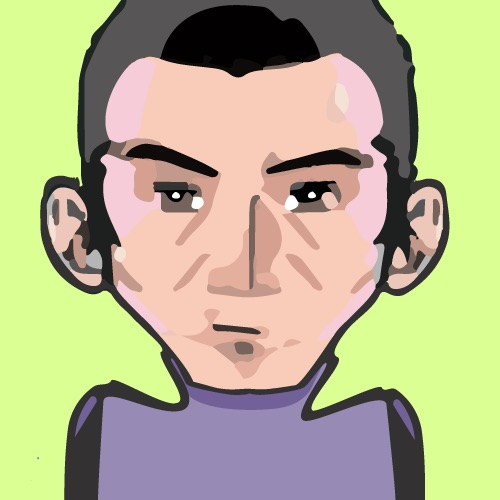

Gérald
LEDUC
INFOGRAPHISTE
PRINT|WEBDESIGN
ORGANISÉ
CURIEUX
AUTONOME
Permis A
COMPÉTENCES
Création & exécution de documents print et web | Identités visuelles | Typographie | Charte graphique | Signalétique | Illustration
Culture de l'image | Bonne connaissance de la chaîne graphique
MAÎTRISE DES LOGICIELS
Photoshop, Illustrator, Indesign, Dreamweaver, Flash, Wordpress, Joomla.
 RÉFÉRENCES
RÉFÉRENCES
2011/17Infographiste Print Web, Auto-entrepreneur
2009Infographiste, Hôtel de Ville de Caluire et Cuire
Création et execution, signalétique PAE
2008Infographiste prépresse, Imprimerie Valley, Lyon
Retouche et numérisation pour le flashage et l'impostion stage
1999Graphiste, EDDS, Lyon
PLV, catalogues, identités visuelles stage
1997FOT Imprimeurs, Pusignan stage
 FORMATION
FORMATION
2018WORDPRESS Simplon.co
2016Titre Professionnel ADVF Savoir & Etre
2014Administrateur Base de Données AFIP
2009Titre Professionnel Infographiste IMEP AFPA
1999MANAA & 1e année BTS Com. Visuelle Ecoles de Condé
1995Bac L - Arts & Langues lycée Deborde, Lyon
PARCOURS
2016/18ADVF, Assoc. ADIAF-SAVARAHM, Villeurbanne
2012/13Agent d'accueil, SARL Letour, Lyon
2011/12Agent d'accueil, SARL Piloubilou, Lyon
2008/10Auxiliaire de vie, ACCPA Les Cristallines, Lyon
2007/08Cuisinier, Restaurant dansant La Chapelle, Lyon
2005/07Pontier-Magasinier, Ets Descours & Cabaud, Lyon
2002/03Téléopérateur, TNS Sofrès, Lyon
LANGUES
Anglais courant
Italien
LOISIRS
Arts Plastiques, Photo, Bonsaïs, VTT